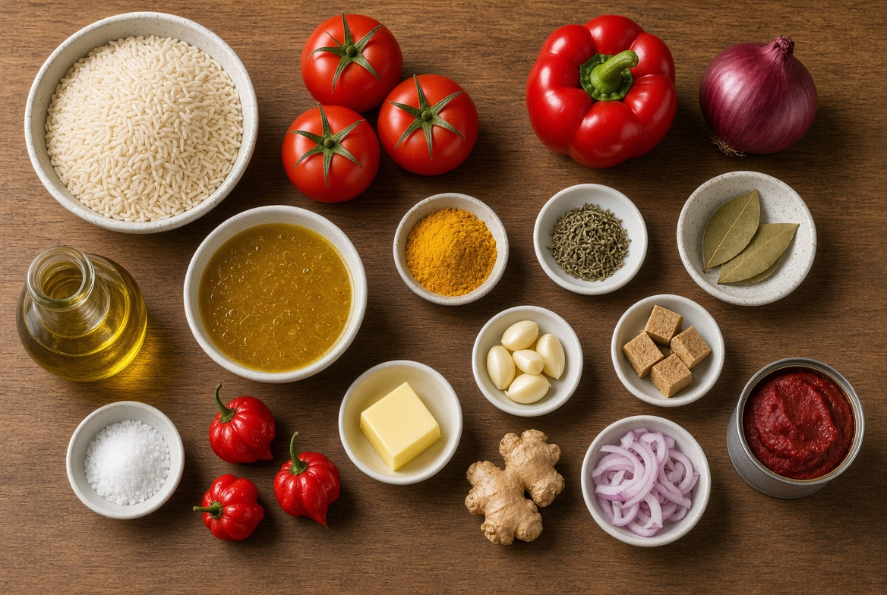

MY FAVOURITE FOODS
My favourite Foods are :
- Jollof Rice with Fried Rice
- Indomie
- Rice & Beans
- Yam & Egg
- Bread & Tea
- Beans & Bread
MY BEST FOOD INGREDIENTS
My Best food is Jollof rice with fried rice.Below are the ingredients used in
preparing my best food ( Jollof Rice
with Fried Rice ):

- Long-grain parboiled rice
- Fresh tomatoes
- Red bell peppers (Tatashe)
- Green bell peppers
- Scotch bonnet peppers (Ata rodo)
- Onions
- Spring onions
- Tomato paste
- Carrots
- Green peas
- Sweet corn
- Green beans
- Cabbage
- Chicken/beef liver
- Chicken
- Vegetable oil
- Chicken stock
- Curry powder
- Thyme
- Bay leaves
- Garlic
- Ginger
- Seasoning cubes
- Salt
- Black or white pepper
STEPS IN PREPARING MY BEST FOOD
Below are the steps in preparing my best food (Jollof Rice with Fried Rice):
- Step ONE
- Wash and cut the vegetables into small pieces.
- Step TWO
- Blend the fresh tomatoes, red bell peppers, green bell peppers, scotch bonnet peppers, and onions to make a
smooth paste.
- Step THREE
- In a large pot, heat vegetable oil over medium heat. Add the blended tomato mixture and cook for about 10-15
minutes until the sauce thickens.
- Step FOUR
- Add tomato paste and stir well. Cook for another 5 minutes.
- Step FIVE
- Add chicken stock, curry powder, thyme, bay leaves, garlic, ginger, seasoning cubes, salt, and black or
white pepper. Stir to combine.
- Step SIX
- Add the washed rice to the pot and stir to coat the rice with the sauce. Add water as needed to cook the
rice.
- Step SEVEN
- Cover the pot and let it simmer on low heat until the rice is cooked and fluffy.
- Step EIGHT
- In a separate pan, heat some oil and fry the chicken until golden brown. Set aside.
- Step NINE
- In another pan, sauté the chopped vegetables (carrots, green peas, sweet corn, green beans, cabbage)
until tender. Set aside.
- Step TEN
- Once the rice is cooked, gently fold in the fried chicken and sautéed vegetables.
- Step ELEVEN
- Serve hot and enjoy your delicious Jollof Rice with Fried Rice!
YOOO!!!!